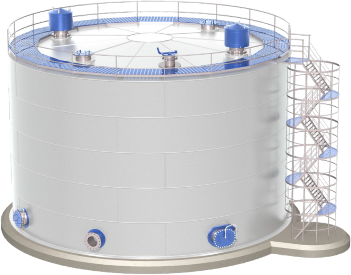

О предприятии

Предприятия ООО «Реал-сервис» было основано в 2003 году. Офис расположен по адресу: г.Харьков Достоевского 18.
ООО «Реал-сервис» осуществляет торговую и транспортную деятельность на рынке светлых нефтепродуктов города Харькова и Харьковской области. Предприятия ООО «Реал-сервис» предлагает нефтепродукты гарантированного качества, от производителей Украины, СНГ, Европы.
Производственная деятельность осуществляется в городе Харькове на нефтебазе, ж/д ветка от ст. Основа ЮЖД.
Основные направления деятельности:
- мелкооптовая торговля нефтепродуктами
- услуги по доставки нефтепродуктов автотранспортом
- услуги по раскредитовки и приему ж/д цистерн на ж/д ветку нефтебазы и перегрузке в автоцистерны